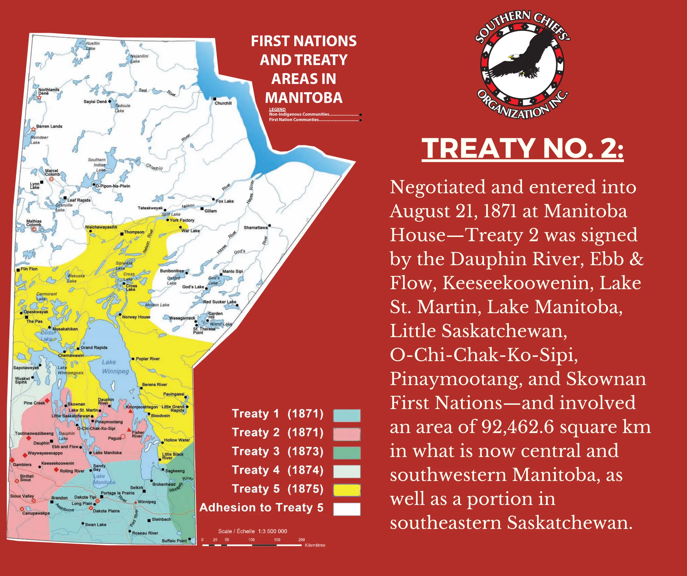
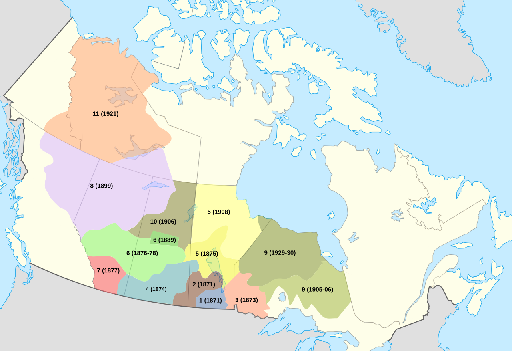

Treaty 1 was the first of the numbered treaties signed between the Canada Crown and the Indigenous peoples in Manitoba. It was negotiated in 1871 and covered a large area of land in southern Manitoba.
Treaty Negotiation Location

Treaty 1 was negotiated between the Canada Crown and the Swampy
Cree
peoples at Lower Fort Gary (historically known as Stone Fort),
Manitoba on August 3, 1871.
Treaty 1 On the Map


Treaty 1 covers the area of land in Manitoba that includes Winnipeg and extends north to the area around Lake Winnipeg. It also includes the area around the Red River and the Assiniboine River.
Indigenous Communities Involved in Treaty 1
The Indigenous main communities involved in Treaty 1 include the Brokenhead Ojibway Nation, the Long Plain First Nation, the Peguis First Nation, the Roseau River Anishinabe First Nation, and the Sandy Bay Ojibway First Nation. These nation were mostly part of the Anisinabe Nation, but also included some Swampy Cree peoples.
Learn more about the treatiesThe Treaty 1 Historic Terms
The historic terms in the treaty were that the indigenous peoples were to surrender their land to the crown in Manitoba and the government was going to provide agricultural tools like farming seeds and instructions in agriculture. Each person was also to get $3 per year which was a lot of money at the time and land for the people that they wouldn't touch.
Wikipedia - Learn more about Treaty 1What makes Treaty 1 unique
Treaty 1 is unique because it was the first treaty signed between the Canada Crown and the Indigenous peoples in Manitoba. It set a precedent for future treaties in the region and established a framework for how the government would interact with Indigenous communities in terms of land rights and resource management.
Treaty 1 Today
Today, Treaty 1 continues to be relevant Today, the government provides reserves for indigenous people just like they promised. There are self-governed education programs Indigenous peoples history is being taught around schools so that the younger generations can learn about the history of how Canada was formed and how the Indigenous peoples were involved in that. The treaty is still being used as a reference for land rights and resource management in the region, and it continues to be an important part of the relationship between the government and Indigenous communities in Manitoba.
Learn about Manitoba's Treaty Land Entitlement and First Nations land transfers